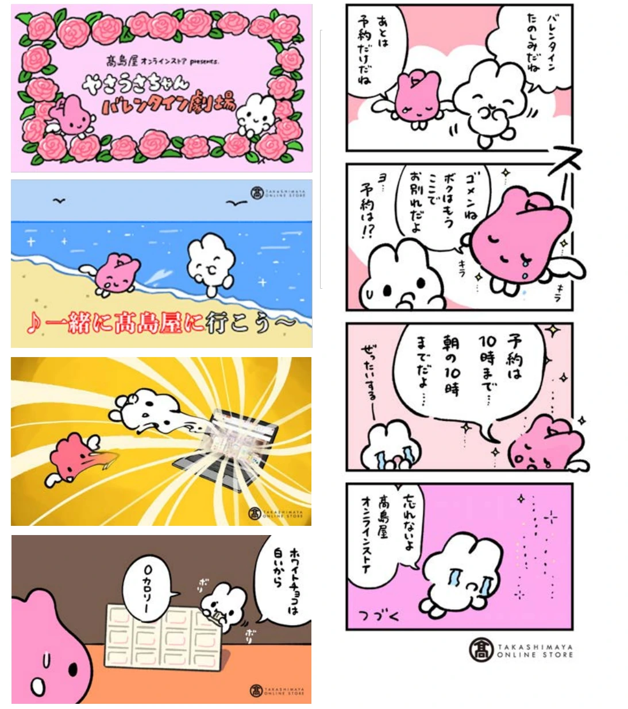

食・農
高島屋 バレンタインプロモーション

PROJECT INFORMATION
高島屋のバレンタインプロモーション。企画・設計、デザイン、イラスト、映像の制作実績です。
01 / 背景とテーマ
輪郭を与える
百貨店のバレンタインは、売場も企画も毎年似た形になりがちです。その中で、思わず見てしまう表現をつくることが求められました。
02 / SCHEMAの担当範囲
全体を整える
SCHEMAは設計・企画からデザイン、イラスト、映像までを担当。オリジナルのキャラクターによる短い劇として構成し、売場の外でも成立する形にしています。
03 / 取り組みの視点
枠組みをひらく
商品を並べて見せるのではなく、物語の側から入る。季節催事を、毎年の続きものとして楽しめる企画にひらきました。